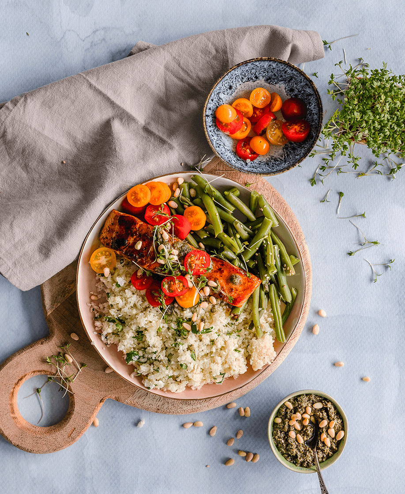

ANTHONY GRAPE
~ About Chef ~
HELLO AND WELCOME
—
I have had a passion for cooking since my early childhood while
growing up in Italy. I just loved to prepare and taste food with my
mom in our small family kitchen. When I was a teen, I worked at
local restaurants.
Now I can boast 20 years of experience working as
a chef at a top-rated restaurant in San Francisco. I have extensive
expertise in professional catering events of any size, from birthday
parties and baby showers to luxury weddings, corporate, and galas.
I am a big fan of various cuisines of the world and often experiment
with my recipes.
In 2001, I moved to New York to work in top restaurants. Since then,
I have been serving private residences and many other venues with
gourmet show-stopping food prepared with love.
I pay great attention to the quality of the products from which I cook. I only buy
groceries at farmers' markets. All the vegetables, fruits, and meats
I use in my meals and traditional recipes are 100% organic, fresh,
and of the highest quality.
Together with my team, I create real culinary masterpieces available to everyone. I also create culinary
pairings. Touch the haute cuisine in a modern design with me!
2001
I moved to New York and received my first
Michelin Guide Star.
2015
I won the World Culinary Award
and opened my own culinary courses.
2022
I received my second Michelin Guide Star
and issued a book of
recipes.
POPULAR DISHES
~ Cuisine ~
I like to mix different styles and cuisines from around the world to get new and unexpected flavor combinations. I also cook according to traditional recipes that everyone loves.
VEGAN
BOWL WITH ASPARAGUS
SEAFOOD
SALMON TARTAR
SEAFOOD
FRYED OYSTERS
DESSERT
FRUIT PANNA COTTA
* You can ask my team and me to cook anything you love or have always wanted to try. The choice of dishes for your private party or special event is entirely up to you. Before ordering my services, you can tell me about your taste preferences and agree on the menu.
IN-HOME DINING
Hire me to create an unforgettable dining experience in the comfort of your own home. I will definitely wow your guests with tremendous savor and presentation. After-dining cleanup is included.
PRIVATE CLASSES
Have you ever dreamed to cook like a chef? Pass one of my cooking classes in your home and have a try. I'll work closely with you to help you achieve a fun and educational culinary experience.
WEDDING CATERING
If you're thinking of innovative food with gourmet scents or a range of traditional favorites to warm your heart, I can turn any idea into reality. Celebrate your love with show-stopping food!
GET A UNIQUE EXPERIENCE
~ I cook for you ~
Hosting a dinner party doesn't require you to cook all day in the kitchen. It is enough to call my team and me, and we will organize the most delicious and unusual evening for you and your guests. I, as an experienced chef, will take care of all the menu planning and preparation of all dishes
CONSULTATION
Contact me to discuss your special occasion, your food preferences, the number of guests, and to schedule a time.
THE MEAL
I prepare all dishes from only the freshest, handpicked ingredients using healthy cooking techniques. The meals are based on our agreed menu. I will also recommend you drink pairings for each meal.
THE SERVICE
I will arrive at your location one hour prior to serving food and will bring any additional equipment. When the food is cooked, I will serve you and your guests with each course. After your dinner is completed, I will clean-up your kitchen. All you need is to enjoy your evening!
I bring every dish to perfection. You and your guests will definitely enjoy this evening. You can order absolutely any dish, including vegan and gluten-free options. Treat yourself to a completely new experience — leave a request for in-home dining or wedding catering. I will make sure that everything is at the highest level.
WHAT MY CLIENTS SAY
~ Guestbook ~CHEF'S RECIPES
~ Blog & Recipes ~
FRENCH CREPES
In France, pancakes made from yeast-free dough, crepes, are very popular. The most famous French pancakes are "Suzette," with a bright orange flavor. But crepes are not only...
STEAK WITH ROSEMARY
he New York steak is cut from the loin of the bull's back at the head of the tenderloin. The delicate texture of the steak and the beef flavor put it on a winning pedestal next to...
APPETIZER WITH SHRIMPS
Pleasant and familiar in taste but unusual in form, this appetizer of cucumbers and shrimp will appeal to all guests. If you want to surprise your friends with your unusual holiday table...
INSTAGRAM GALLERY
~ My latest works ~